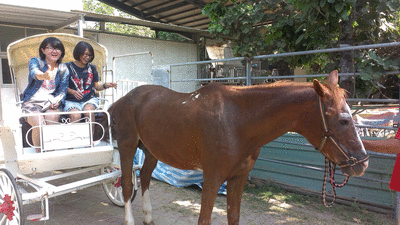

樂園設施 amusement park 
為增加校慶遊樂園活動之多元性，舉辦遊園馬車、泡泡足球、划船競賽、浪人體驗，為成大拓荒校慶增添更多可參與的形式，使每個參與成大校慶的人，在其中體會不同於以往的創新體驗，已達活動目的讓不畏創新嘗試存於每個人心中。
前進大西部-校園馬車遊街
透過馬車行進各活動區，串聯成大校慶，使校園各處充滿校慶歡樂氛圍。
馬車出沒在?
活動時間:11/9(日) 14:00 ~ 17:00
活動地點:成功大學 成功-勝利-光復-勝利校區
馬車怎麼搭呢?
有一百種搭法

馬車影片